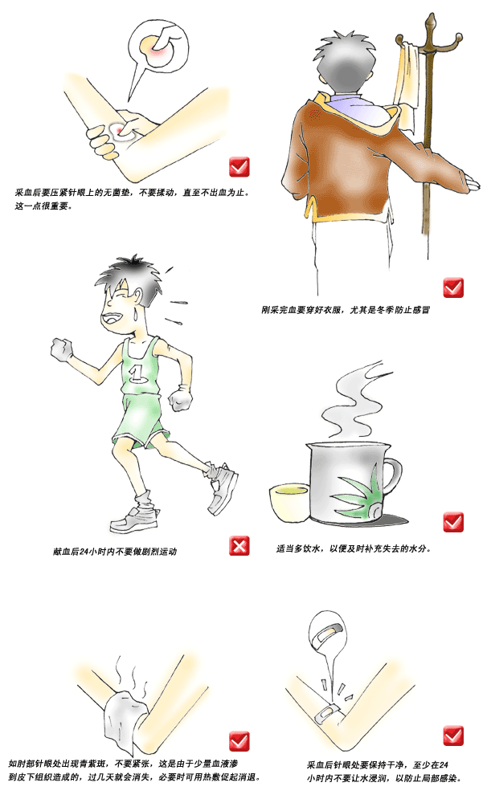
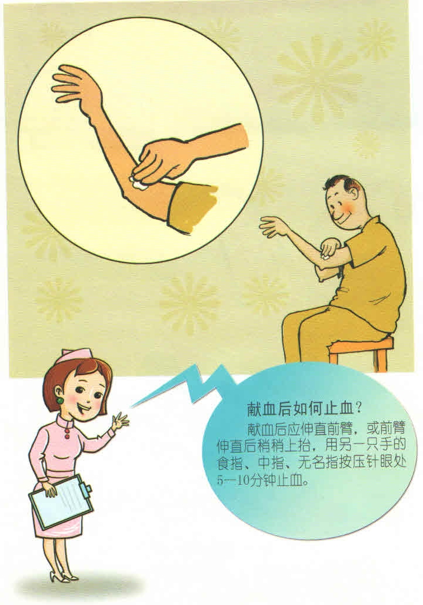
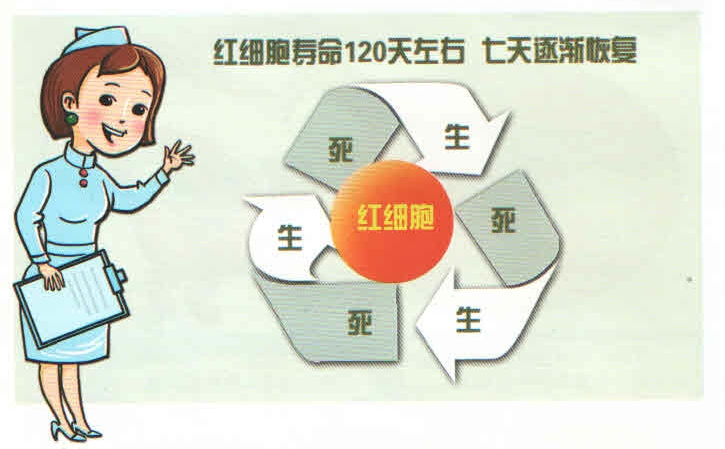
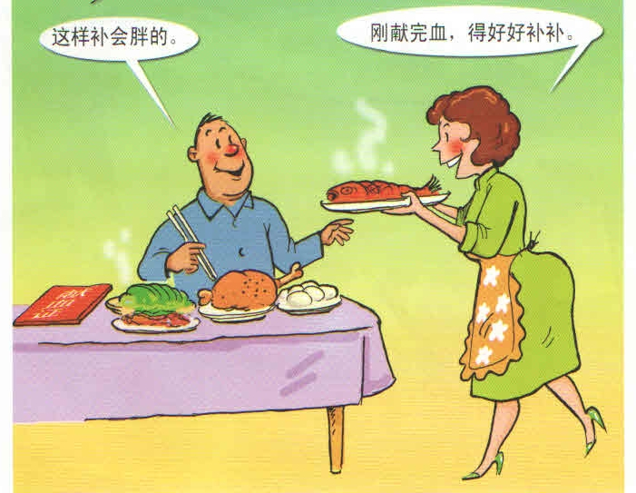
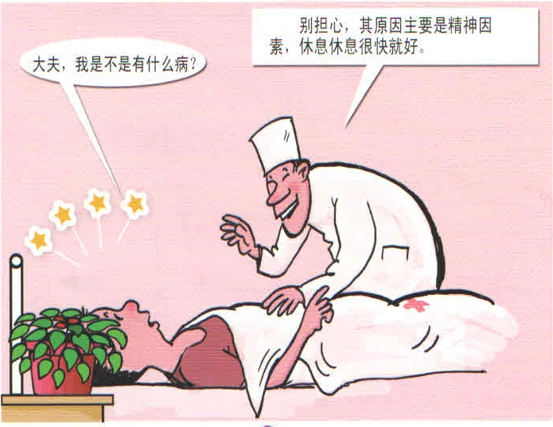

1．要保护好静脉穿刺部位：穿刺部位止血后不等于完全愈合。至少在24小时内不要被水浸润，也不要被不洁物品污染，更不要在此部位搓揉。
2. 个人活动要适度：献血后当天请不要从事高空作业、高温作业、驾驶车辆、体育比赛、通宵娱乐等活动。
3. 补充营养不要过量：可以进食新鲜蔬菜瓜果、豆制品、奶制品、新鲜鱼虾肉蛋等。请不要进食过量。
1.献血后应用消毒棉球盖好穿刺孔，以胶布固定，伸直手臂，或前臂伸直后并用3个手指顺静脉走向压迫针眼5-10分钟。
2.检查穿刺孔部位有无渗血或出血，如有出血应抬高手臂并继续压迫局部。
3.为保护好穿刺孔不受感染，至烽在4小时内不要取去穿刺孔上的敷料。
4.针眼处1－2天内不沾水。
只要按规定的间隔时间参加献血，是不会引起贫血的。因为献血只是人体内可以再生的血液暂时少量减少，不影响人体血液的正常再生功能，献出的少量血液很快就会恢复。贫血本身是一种疾病，对于患有贫血的人，在献血查体时，就会体查出来。这种人是不能参加献血的。献血绝对不会引起贫血，相反，经常献血会刺激造血器官，增强器官，造血功能，有益于人体白细胞的再生。
红细胞平均寿命120天左右，不献血也会衰老死亡，一般献血7天后红细胞即可逐渐恢复正常，献血后1-2小时血容量就会恢复，不影响正常的血液循环。所以，献血后1-2天内适当休息，合理调节饮食即可。
献血后，只需要正常饮食，多饮汤水，切勿暴饮暴食，以免造成身体不适。
首次参加献血的人中有极少数人会发生晕眩反应。其表现为心慌、头晕、面色苍白、恶心等，然后出汗，出汗后面色逐渐红润，症状很快消失。上述晕眩反应经适当护理，无一例发生意外。
造成这种反应的因素很多，有的是对献血缺乏生理知识，精神紧张；有的是心理因素，看到别人晕眩，自己也觉得晕了；有的睡眠不够充足；有的未进早餐；有的献血前疲劳过度等等。
